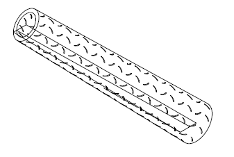

Turbine Tower
The goal of this FEA Analysis is to contruct a wind turbine tower that will be structurally stable under strenuous conditions. It has to work under the following:
- I.The weight of the nacelle, which is represented as a concentrated force down unto the top of the tower.
- II.The force of drag from the hub and the turbine blades, which is a concentrated force perpendicular to the force caused by the nacelle.
- III.A counter-clockwise moment caused by the weight of the turbine blades, which are 252 inches away from the centre of the tower.
- IV.A pressure load caused by the wind onto the side of the tower. The direction of this is assumed to be the same as that of the drag force.
- V.A dead load from the weight of the tower itself.
The tower and the flange ( Shown below respectively) fill the above requirements. The tower is able to sustain the load and deflect only a maximum of 15 inches. The flange is able to withhold the stresses from the fastening bolts and hold the tower in place.


Cooking a Turducken
The problem with cooking a turducken is often the adverse temperature gradient between the exterior and the interior of the turducken. FEA analysis is conducted to optimize the cooking process while minimizing the percentage of the meat burnt. A conductive skewer is placed into the turducken to aid cooking of the interior.

Optimal Shell and Tube Heat Exchanger
The goal of this project is to design a heat exchanger that cools oil using air via a heat exchanger. This process is intended to be as efficient as possible, both in terms of the heat exchange as well as the size, weight, and cost of the heat exchanger. This heat exchange is necessary so that the lubricating oil for the engine does not thermally break down. The oil will enter the heat exchanger at 350°F and needs to exit at a maximum of 195°F. In addition, due to packaging constraints, the heat exchanger will be 60” downstream of the air inlet, while remaining compact.
Via this design, oil enters from the left and exits through the right in a straight path. This is designed due to the viscous nature of oil itself.
Axial Turbine Compressor
The goal of this project is to design the compressor stage for a gas turbofan engine. A compressor increases the density of the air before it is fed into the combustor and turbine stages. The denser the air, the more thrust will be generated by the turbofan engine. By minimizing the power needed to run the compressor, the efficiency of the engine will be maximized, thus saving on operating costs.
The overall compression ratio at an operating height of 40,000 feet is 24.19:1 with a maximum rotational speed of 18,000 revolutions per minute. The compression ratio at sea level is 13.58. Therefore, the design of this axial compressor meets both the minimum compression ratio and maximum operating speed requirements, making it viable for the purposes of this project with a second objective of minimizing the power consumption in mind.
